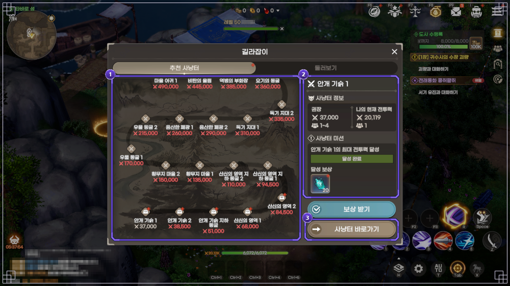
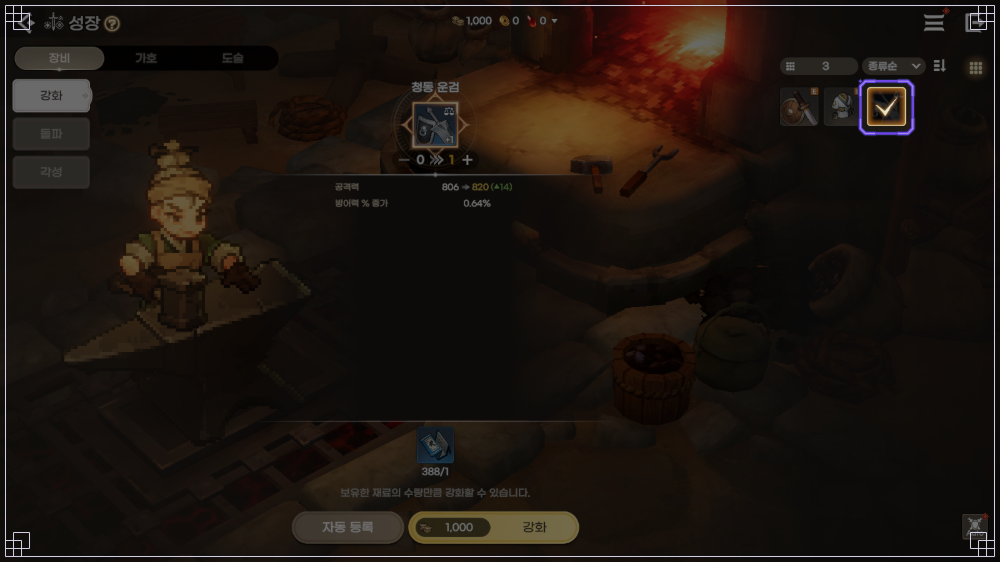
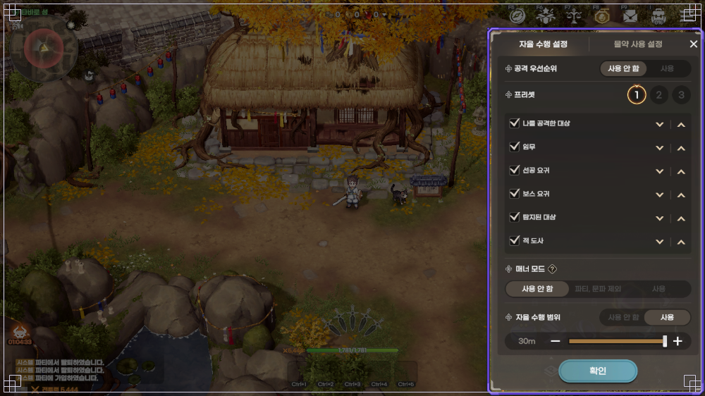
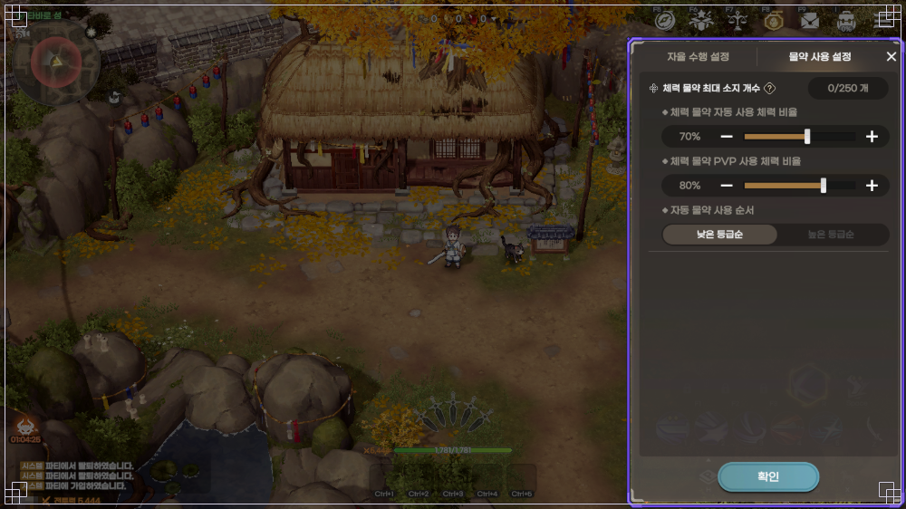
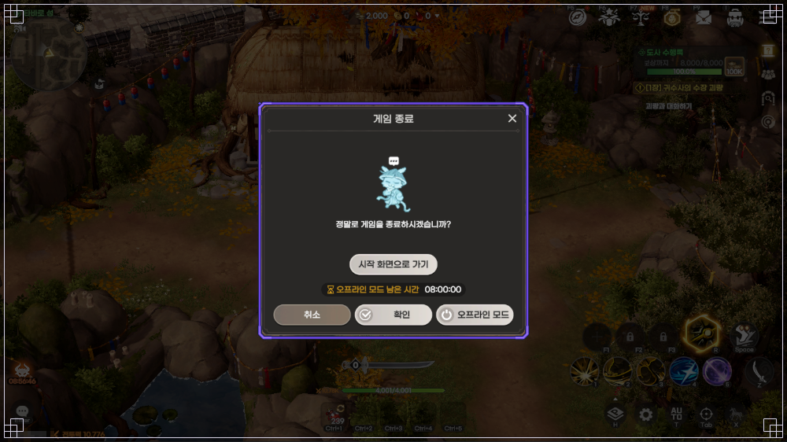
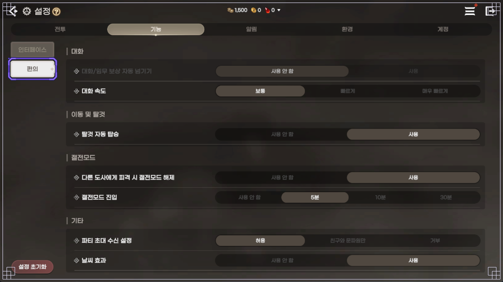

도깨비의세계 전투력 올리기, 자동사냥 오프라인 모드 11월 18일 예정
도깨비의세계는 전투력에 따라 사냥터 보상이 달라지는 규칙이 하나둘 붙고 있는데요. 11월 6일 임시 점검 이후에는 내 공격력이 사냥터 범위보다 낮으면 보상 획득량이 80% 줄어들게 됐고, 다음 업데이트에서는 상위 사냥터의 이 기준이 바뀔 예정입니다. 그래서 오늘은 전투력을 올리는 순서와 자동사냥 설정, 오프라인 모드까지 차례대로 정리해 보려고 합니다.
도깨비의세계 전투력 올리는 법
도깨비의세계 전투력은 영기 수련, 장비 강화, 도술 슬롯을 차례로 채우면서 길라잡이의 권장 전투력을 이정표 삼아 올리시면 됩니다.
길라잡이의 추천 사냥터는 권장 전투력을 채우면 캐릭터당 최초 1회 보상을 받을 수 있는데요. 강화 재료를 풍성하게 주는 보상이라 챙겨 두시면 쏠쏠합니다.

길라잡이 추천 사냥터 지도에 사냥터마다 권장 전투력이 적혀 있습니다
이미지: 도깨비의세계 공식 포럼 팁
| 사냥터 | 권장 전투력 |
|---|---|
| 안개 기슭 1 | 37,000 |
| 산신의 영역 1 | 68,000 |
| 황무지 마을 1 | 135,000 |
| 우물 동굴 1 | 170,000 |
| 요기의 동굴 | 360,000 |
길라잡이 권장 전투력(10월 20일 자료)
- 영기 수련 내기, 외기, 진기 순서로 하나씩 열리고 소요 시간은 실제 시간입니다. 문파의 도움으로 시간을 줄일 수 있고(하루 최대 100회), 28-1을 마치면 내면의 길이 열립니다.
- 장비 강화 모든 장비는 +50까지 강화되고 10레벨마다 개방이 한 번 필요합니다. 희귀 등급 이상 장비는 분해하면 엽전을 뺀 일반 강화 재료를 100% 돌려받아요.
- 도술 슬롯 기본 5개이고, 나머지 3개는 영기 수련 5-1 완료, 전투 멤버십 구매, 협력 수련 '산군의 석등' 3-1 완료로 열립니다.

강화 창 아래쪽 [자동 등록]을 누르면 개방 직전 레벨까지 강화 비법서가 자동으로 골라집니다
이미지: 도깨비의세계 공식 포럼 가이드
도술 조합은 도술 개편 후 조합 글에서 따로 다뤘고, 전투력 쪽에서는 슬롯을 모두 열어 두는 것이 먼저입니다.
도깨비의세계 사냥터 보상 감소 기준
내 공격력이 사냥터에 안내된 범위의 최솟값보다 낮으면 보상 획득량이 80% 줄고, 범위 안에 있으면 전투력 차이에 따른 감소가 없습니다.
범위의 최댓값보다 높을 때는 보상 획득량이 아니라 아이템 획득 확률이 줄어드는데요. 안내된 최솟값과 최댓값도 감소가 없는 범위에 들어가며, 이 표는 입장 조건이 아니라 보상 감소 기준입니다.
| 사냥터 | 감소 없는 공격력 범위 |
|---|---|
| 산신의 영역 | 6,580~14,816 |
| 산신의 영역 지하 동굴 | 8,982~19,441 |
| 황무지 마을 | 13,076~23,910 |
| 우물 동굴 | 14,602~27,110 |
| 역병의 부화장 | 24,846~65,460 |
11월 18일 전까지 쓰는 공격력 범위 · 일부 사냥터만
다음 업데이트에서 상위 사냥터의 보상 감소가 공격력 환산이 아닌 순 전투력 기준으로 바뀔 예정이라, 표의 상위 사냥터 행은 그 전까지 맞는 숫자로 봐 주세요. 하위 사냥터는 기존 기준이 그대로입니다.
사냥터를 고를 때, 이렇게 나눠 보세요
- 공격력이 범위보다 낮다면 보상이 크게 줄어드니 한 단계 아래 사냥터로 내려가시는 편이 좋습니다.
- 범위 안이라면 감소가 없으니 그 사냥터 그대로 가시면 됩니다.
- 범위를 넘었다면 아이템 획득 확률이 줄어들기 때문에 위 사냥터가 낫습니다.
공격력 증가 버프로 늘어난 공격력은 보상 감소를 가리는 환산 전투력에 반영되지 않고, 파티 사냥에서는 이 기준이 파티원마다 따로 적용됩니다.
세계지도 지역 정보에서도 11월 11일 업데이트부터 내 전투력 기준 보상 감소 여부를 볼 수 있는데요. 다만 한 지역이라도 권장 전투력과 맞지 않으면 드롭 감소가 뜨는 오류가 알려져 있어서, 실제 감소 여부는 그 맵으로 이동한 뒤 미니맵 좌측 상단을 보시면 됩니다.
미니맵 좌측 상단에서 드롭 감소 여부를 바로 볼 수 있어요
제 캐릭터가 지금 서 있는 사냥터의 난이도는 〔적합 / 쉬움 / 매우 쉬움 / 위험〕으로 표시돼 있어요.
도깨비의세계 자동사냥 설정
자동사냥은 [자율 수행 설정]에서 공격 우선순위 프리셋과 매너 모드, 자율 수행 범위를 정하고 [물약 사용 설정]에서 체력 비율을 맞추면 기본 세팅이 끝납니다.

[자율 수행 설정] 탭에서 공격 우선순위 프리셋과 매너 모드를 고릅니다
이미지: 도깨비의세계 공식 포럼 가이드
매너 모드는 다른 도사가 공격 중인 요귀를 건드리지 않도록 정하는 옵션인데요. 10월 28일 업데이트 뒤로는 다른 도사가 전투 중인 보스 요귀는 매너 모드에서도 공격합니다.

[물약 사용 설정] 탭에서 체력 물약을 쓸 체력 비율을 정합니다
이미지: 도깨비의세계 공식 포럼 가이드
물약은 사냥 때 자동으로 쓸 체력 비율과 등급별 사용 순서를 정할 수 있고, 자동 HP 회복 물약은 등급, 회복량, 퀵슬롯 위치 순으로 골라지며 잠금 상태의 물약은 빼고 쓰입니다.
자동 반격은 중간에 이동하거나 지면을 터치하거나 도술을 직접 쓰면 멈추고 전투 상태가 끝날 때까지 다시 시작되지 않는데요. 길라잡이로 사냥터에 이동한 뒤 자동 전투를 바로 시작할지는 11월 4일 업데이트부터 옵션으로 고를 수 있습니다.
도깨비의세계 오프라인 모드와 절전 모드
오프라인 모드는 [메뉴] - [나가기]를 눌러 게임 종료 창에서 [오프라인 모드]를 고르면 켜집니다.

게임 종료 창 아래쪽에 오프라인 모드 남은 시간이 표시되는데, 이 화면에서는 08:00:00입니다
이미지: 도깨비의세계 공식 포럼 가이드
성장 멤버십을 쓰면 오프라인 모드의 일일 사용 제한이 풀리고 접속할 때마다 최대 8시간까지 쓸 수 있습니다. 10월 28일 업데이트부터는 오프라인 모드에도 설정해 둔 도술 사용 순서와 자동 사용 조건이 적용되고, 저장된 순서가 완전하지 않으면 기본 도술 사용 순서가 쓰입니다.
오프라인과 절전, 이럴 땐 이렇게
- 접속을 끊고 사냥을 이어 가려면 오프라인 모드로, 성장 멤버십이 아니라면 일일 사용 제한 안에서 쓰게 됩니다.
- 금방 돌아올 땐 절전 모드가 낫습니다. 오프라인 모드는 접속을 유지하는 기능이 아니라서 재접속 때 대기열이 있으면 순서를 기다리게 됩니다.
절전 모드는 [설정] - [기능] - [편의]에서 진입 시간과 다른 도사에게 피격 시 해제할지를 정하는데요. 메뉴를 열지 않고 HUD 프리셋 왼쪽 버튼으로 타바로성 이동과 절전 모드를 바로 쓸 수 있습니다.

[설정] - [기능] - [편의] 화면에서 절전 모드 진입 시간과 피격 시 해제 여부를 고릅니다
이미지: 도깨비의세계 공식 포럼 가이드
절전 모드를 켜면 이런 화면이 떠요
저는 〔자기 전에 오프라인 모드를 켜는 / 외출할 때 오프라인 모드를 켜는 / 오프라인 대신 절전으로 켜 두는〕 편이에요.
아직 남아 있는 문제도 있습니다.
- 오프라인 모드로 바꾸면 자동 조작을 꺼 둔 도술이 쓰이고 사냥 범위가 마지막 위치 기준으로 바뀌는 현상(10월 초부터 이어지는 현상)
- PC에서 오프라인 모드에 들어가거나 게임을 끌 때 클라이언트가 응답하지 않는 현상(10월 28일 접수)
자주 묻는 질문
Q. 필드 보스는 전투력 몇부터 들어갈 수 있나요?
10월 24일(토)부터 전체 서버에서 전투력 150,000 이상이면 입장할 수 있습니다(기존 120,000). 저녁 등장 시간은 10월 21일 업데이트로 20:00에서 21:00으로 바뀌었어요. 요일은 산신 산군대호가 월·수·금·일, 해골장군이 화·목·토입니다. 바뀌었을 수 있으니 게임 안에서 한 번 확인해 보세요.
Q. 도사 성장 미션 이벤트는 언제까지 하나요?
11월 18일(수) 08:00까지 진행됩니다. 포인트 2점부터 희귀 강화 재료 선택 상자(귀속) 10개를 받을 수 있어요.
도깨비의세계 11월 18일 예정 정리
11월 18일(수) 업데이트에 들어올 예정인 변화를 한 번에 모아 보면 아래와 같습니다. 모두 예정이에요.
| 항목 | 11월 18일(수) 예정 내용 |
|---|---|
| 제자리 사냥 | 한 자리에서 계속 사냥하는 제자리 사냥 기능이 제거될 예정이고, 5m 범위 인식은 유지됩니다. |
| 비경 | 각 콘텐츠의 권장 전투력을 기준으로 입장 조건이 적용될 예정입니다. |
| 돌파 | 장비·가호·도술 돌파에 실패 횟수가 쌓여 정해진 횟수에 이르면 100% 성공하는 기능이 들어올 예정입니다. 11월 17일(화) 00:00부터 정기 점검 완료까지는 돌파 이용이 제한됩니다. |
| 도술 강화 초기화 | 강화에 쓴 재료와 비용을 돌려받는 기능이 예정돼 있습니다. |
| 천요석 제작 | 다음 업데이트에서 천요석을 요혼석으로 만드는 주간 제작 한도가 300개에서 100개로 줄어들 예정입니다. |
| 원격 금전 환전 | 타바로를 직접 찾아가지 않고도 금전을 환전할 수 있는 기능을 준비 중입니다. |
공식 공지 기준 · 천요석 제작은 다음 업데이트, 나머지는 11월 18일(수) 예정
개인적으로는 돌파 성공 보장이 제일 반갑네요~ 영기 수련과 장비 강화부터 천천히 올려 보시면 좋겠습니다.
✔ 도깨비의세계 같이 보기 좋은 내용
· 도깨비의세계 순위 뒤집힌 도술 조합 추천, 사냥 인기 4유형·PvP 현황 10월 21일 개편 후 10월 22일 기준
· 도깨비의세계 강화서 획득방법, 비경·필드 보스·상인회 어디서 나오나
· 도깨비의세계 화첩 조각 얻는 법 4가지, 거래소는 안 돼요
참고한 곳
· 도깨비의세계 공식 공지 — 11월 18일(수) 업데이트 미리보기!
· 도깨비의세계 공식 공지 — 사냥터별 보상 감소 기준 추가 안내
· 도깨비의세계 공식 공지 — 오류 및 개선사항 제보 통합 안내